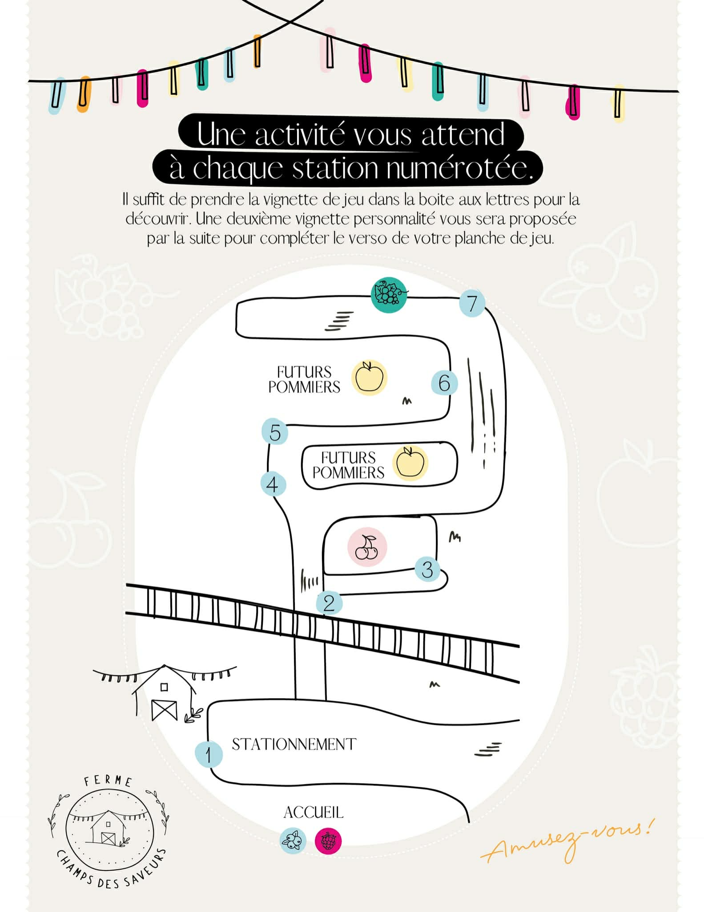
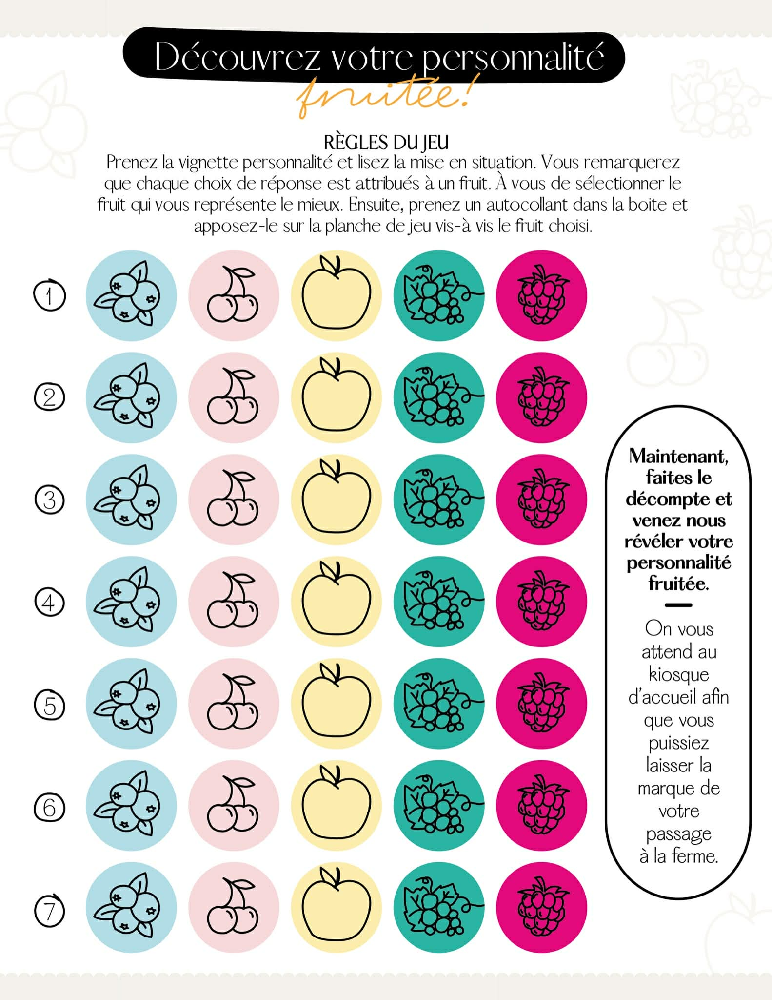

📍 ❌ Fermé pour la saison | On se revoit à l'été 2026!
Un jeu agrotouristique unique réparti sur 7 stations à travers notre terre. Apprenez sur nos cultures tout en vous amusant en famille.
À chaque visite, vivez une expérience interactive unique. En parcourant nos champs et vergers, vous stopperez à 7 stations numérotées, chacune cachant une vignette de jeu dans une petite boite aux lettres.
Chaque question vous invite à choisir le fruit qui vous représente le mieux dans une mise en situation. À la fin de votre parcours, venez nous révéler votre personnalité au kiosque d'accueil — et repartez avec la marque de votre passage à la ferme !
🌿 En prime, chaque station vous fait découvrir nos cultures : framboises, cerises, bleuets, raisins et nos futurs pommiers.

La carte des 7 stations réparties sur la terre
À l'accueil, recevez votre planche de jeu recto-verso et une pochette d'autocollants représentant les 5 fruits de la ferme.
Suivez la carte et découvrez les stations numérotées à travers champs. Dans chaque boite aux lettres, une vignette de mise en situation vous attend.
Lisez la mise en situation et sélectionnez le fruit qui vous représente le mieux parmi les 5 choix. Apposez l'autocollant correspondant sur votre planche.
Après les 7 stations, comptez quel fruit revient le plus souvent sur votre planche. Ce fruit révèle votre personnalité fruitée !
Retournez au kiosque d'accueil pour découvrir ce que votre personnalité fruitée dit de vous — et laissez la marque de votre passage à la ferme.
7 questions, 5 fruits, une personnalité à découvrir

La planche de jeu recto — 7 lignes, une par station
Chaque fruit de la ferme représente un profil de personnalité différent. À chaque station, identifiez-vous à l'un d'eux et apposez son autocollant sur votre planche.
Activité pour toute la famille, petits et grands, dès l'été 2026.